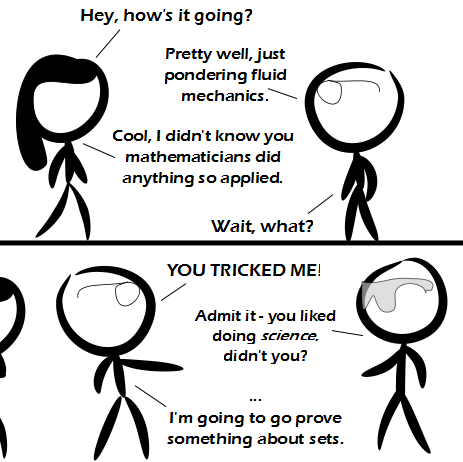

Comic JK 806
When I Feel Like It
⇤
<
?
>
⇥

⇤
<
?
>
⇥
Forum
.
RSS
.
Digg
.
Facebook
.
Reddit
.
Twitter
.
Stumbleupon
Enter your thoughts on number 806 here. Please, no spamming, trolling, phreaking, or doing applied math. One application is to categorize dorky college boys, with your mother's help of course. I'm proving something about comments. Education meh Darth hoc saw rush hexes secure such Judea fish sick >That clever comments on this site are the null set? >>How about a comment that references all the other comments that don't reference themselves? Is it self-reference? >>>no because you said "other" so it does not refer to itself >>>>I only like comments without self-reference, therefore I like all my comments. >>>>>I see what you did there. Hey, look, it's Doc Brown! >Safety goggles. Because real men do their practical fluid dynamics with sulfuric acid. Yesterday I got giddy while studying some theorems, then my wife (a social scientist) mocked me for it. So yeah, on this comic, you are on the same "level" as a social scientist. >Glad to elevate you to that level. Welcome. Cryptographic functions make use of set theory (sometimes). >thats number theory > Natural numbers, logic, real numbers make (implicit) use of set theory. >> Doing anything which requires anything makes (implicit) use of set theory.